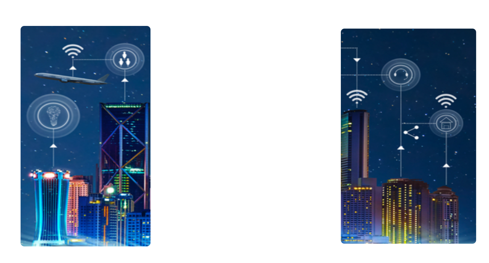

Industrial Internet Of Things
Contents
- Definition.
- Characteristics.
- Block Diagram.
- IOT Platforms.
- Demonstration.
Connecting the unconnected

Smart object to communicate
Characteristics.
- Connectivity.
- Intelligence and Identity.
- Scalability.
- Dynamic and Self-Adapting.
- Safety.
What is an IOT Platform ?
- Scalability.
- Bandwidth.
- Protocol.
- System performance.
- Security.
- Disaster recovery.
- Google Cloud IoT.
- Cisco IoT Cloud Connect.
- Salesforce IoT Cloud.
- Amazon AWS IoT Core.
- Microsoft Azure IoT Hub.
- Oracle IoT.
- ThingSpeak.
- Blynk.